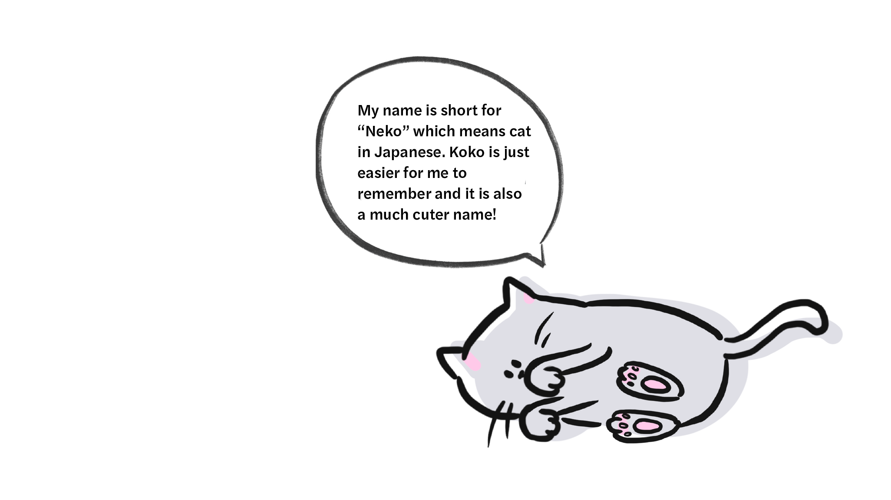
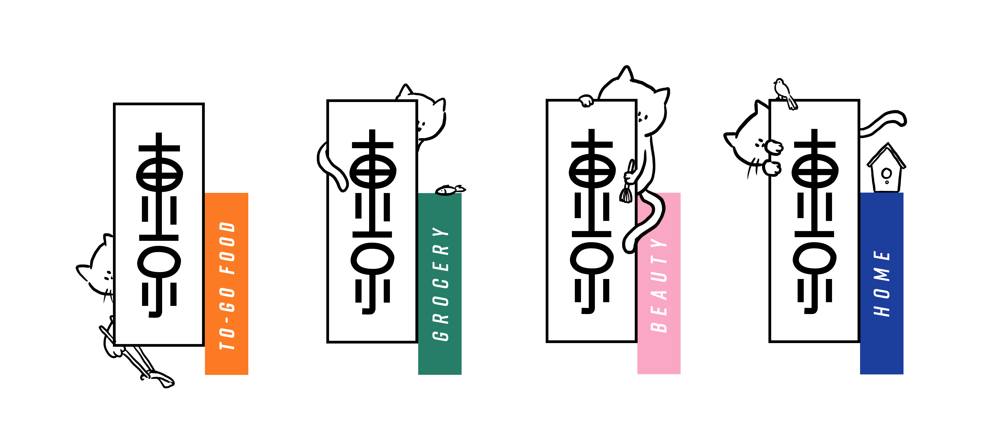
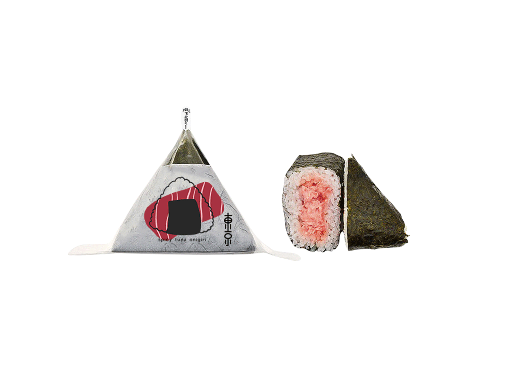
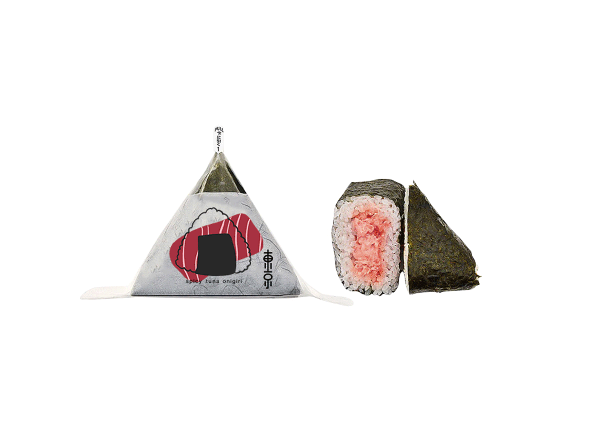

CONCEPT
Introducing culture through food.Revamping a family owned business that offers authentic asian cosmetics and food products at an affordable price.
LOG ANATOMY
Tokyo Mart welcomes people who are new to Japanese and Chinese culture. The mark simply translates to“Tokyo” in Japanese and Chinese.

Giving the mark a personality. The mark is designed to look playful and approachable even for those who do not understand the language.

BRAND OVERVIEW
Tokyo Mart is a light-hearted, contemporary and a welcoming grocery store. The vibrant colors and typefaces supports the brand. Rift Soft suggests friendliness and playfulness yet retains its earnestness, complimenting with the a simplistic typeface, Akagi Pro, for contrast and flexibility.

MEET KOKO
Koko is a Persain cat who roams around Tokyo Mart. He loves to jump onto bags of rice and play hide and seek with the customers. Koko’s character sums up Tokyo Mart’s brand personality. He is the store’s Mascot, used in promotional materials. Along with souvenirs of Koko for visiting customers to take home.

CORE VALUES
FRIENDLY
Food isn’t just food, food connects people of all ages, gender, ethnicity and races together.
COMFORT
Products and promotional materials complimented with illustrations of Koko and of the products. The brand uses a playful tone to invite those who are foreign to Japanese and Chinese culture while also bringing back nostalgic memories to others.
WHIMSICAL
Giving people the feeling of satisfaction and comfort, through food and the environment, allowing you to feel like home at the store.
SUBRANDS
Tokyo Mart offers a variety of products not limited to packaged food.
VISUALS
the mark can create any type of pattern and is used in packaging, menu and advertisements.


Introducing foreign food and beverage with illustrations
Simple and vibrant illustrations invites and tells people that are unfamiliar with Japanese and Chinese culture what the food product is.
 
